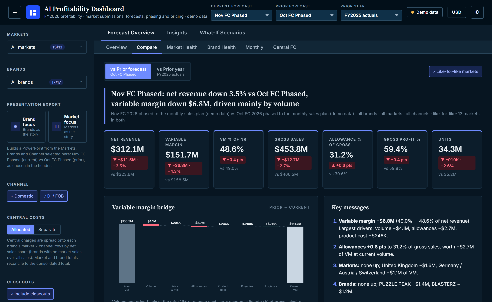

Insights
Notes on finance, AI and getting things done
Practical thinking from 12 articles on FP&A, commercial finance, controls, transformation and where AI really helps.
Building an AI profitability dashboard: five lessons
What I learned turning a finance reporting idea into a working tool, using Claude and synthetic data.

What a fast close really depends on
Actuals by Day 4 come from discipline before month-end, and that discipline makes AI easier to use later.
AI in FinanceA starter prompt kit for finance teams
Five reusable prompts for common finance work, and the habits that keep them safe.
ControlsAI in finance needs controls too
The discipline that keeps a month-end close reliable applies directly to AI.
AI in FinanceMaster data is your first AI project
Before asking AI for insight, make sure your customers, SKUs and prices mean the same thing everywhere.
AI in FinanceWhere AI earns its place in FP&A
Start with the finance cycle, then apply three simple tests before automating anything.
FP&AWriting commentary leaders actually read
A monthly pack is only useful if the reader knows what to do next. Here is the structure I use.
FP&AMaking rolling forecasts useful
How to keep a rolling forecast focused on decisions, so it does not become one more reporting exercise.
TransformationFrom local entity to distributor: a finance checklist
What finance needs to get right when a market moves to a distributor operating model.
Commercial FinanceGross-to-net, explained for people outside finance
A plain-English guide to the gap between list price and the money a company actually keeps.
Commercial FinanceThe pricing waterfall: where margin quietly leaks
Why I build a pricing waterfall before any negotiation, and how to read one.
TransformationBuilding a finance function from a blank page
What I would do first, and in what order, when there is no finance team, process or system yet.
Keep learning
More to watch and read
A curated list of videos, institutions and frameworks is on the Resources page.